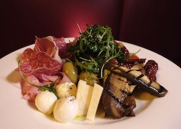
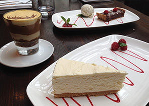

New Spring / Summer Menu Coming
Fresh seasons call for fresh flavours. Our chefs are putting the finishing touches on a brand-new spring and summer menu — and we can't wait to share it with you.
Expect vibrant seasonal ingredients, lighter plates perfect for warmer evenings, and a few exciting new additions to our classics. We've been working with our local suppliers to source the very best produce that British spring and Italian tradition have to offer.
From delicate antipasto and handmade pasta to beautifully crafted mains and our ever-popular dessert menu — every dish has been thoughtfully designed to delight.
The new menu will be available shortly. In the meantime, our current À La Carte and Drinks menus are available to download from the homepage.
Watch this space — the wait will be worth it.


